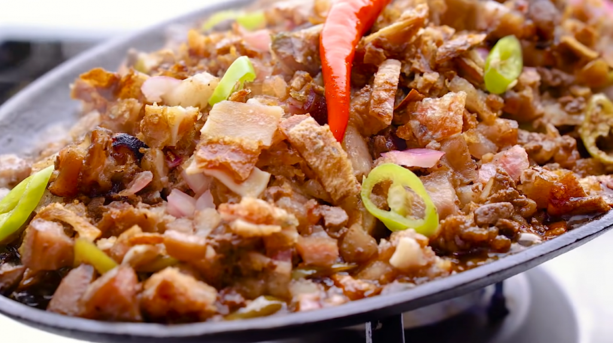

California Maki

About Pork Sisig: A Description
Pork sisig is a dish native to the Philippines, born around the World Wars. It was originally a "poor mans meal" as it's ingredients were
mostly a mix of pig ears, tails, fat, meat, and other scraps that could've been made during war. However, it has
since progressed to such a refine state and flavor, that everyone could enjoy it. It is crispy, savory, and overall delicious to the tongue.
Ingredients
- 1 pound pork belly - sliced about half-inch thick
- salt and pepper
- 3 pieces chicken liver
- 1 big red onion - finely chopped
- ½ lemon or 3-4 kalamansi juice
- 1-2 chili peppers - minced or ¼ tablespoon chili flakes
- ½ tablespoon soy sauce
- ⅛ teaspoon ground black pepper
Steps
- Season pork belly slices with salt and pepper. Let it marinate for at least 30 minutes.
- Grill pork belly and chicken liver until well done. Pork skin should be crispy.
- Once grilled, chop the pork belly and chicken liver into small fine pieces.
- In a bowl, combine the chopped meat, onions, lemon juice and chili pepper. Season with soy sauce and pepper.
- Warm it in a pan with a bit of oil if desired. Alternatively, heat a sizzling plate and add a some butter or margarine. Add the Sisig and serve while still sizzling hote.